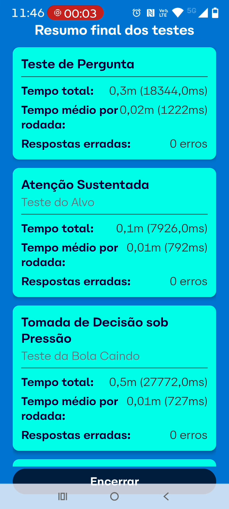

<template id="cena-08-template">
  <div id="cena-08" data-composition-id="cena-08" data-start="0" data-duration="17" data-width="1920" data-height="1080">
    <style>
      #cena-08 {
        width: 1920px;
        height: 1080px;
        overflow: hidden;
        background: #1e3460;
        font-family: "Satoshi Variable", sans-serif;
        color: #fdfbf4;
        position: relative;
      }
      .scene-wrapper {
        width: 100%;
        height: 100%;
        padding: 108px 160px 108px 231px;
        box-sizing: border-box;
        display: flex;
        align-items: center;
        gap: 232px;
      }
      .phone-area {
        width: 402px;
        height: 865px;
        flex-shrink: 0;
        position: relative;
        filter: drop-shadow(0 40px 80px rgba(0,0,0,0.5));
      }
      .phone-video {
        position: absolute;
        top: 10px;
        left: 8px;
        width: 379px;
        height: 845px;
        object-fit: cover;
        border-radius: 32px;
      }
      .phone-overlay {
        position: absolute;
        top: 0;
        left: 0;
        width: 100%;
        height: 100%;
        pointer-events: none;
      }
      .content-area {
        flex: 1;
        display: flex;
        flex-direction: column;
        justify-content: center;
        gap: 60px;
        max-width: 800px;
      }
      .title-block {
        display: flex;
        flex-direction: column;
        gap: 20px;
      }
      .main-title {
        font-size: 40px;
        font-weight: 700;
        color: #86e5ff;
        letter-spacing: 0.065em;
        line-height: 1.2;
        text-transform: uppercase;
      }
      .main-subtitle {
        font-size: 21px;
        font-weight: 400;
        color: #b6becf;
        letter-spacing: 0.06em;
      }
      .description {
        font-size: 32px;
        font-weight: 300;
        color: #86e5ff;
        line-height: 1.35;
        max-width: 701px;
      }
      .dashboard-grid {
        display: flex;
        gap: 24px;
      }
      .dash-card {
        flex: 1;
        background: rgba(14, 106, 192, 0.12);
        border: 1px solid rgba(14, 106, 192, 0.35);
        border-radius: 16px;
        padding: 24px 16px;
        display: flex;
        flex-direction: column;
        align-items: center;
        gap: 8px;
      }
      .dash-value {
        font-size: 48px;
        font-weight: 900;
        color: #fdfbf4;
        line-height: 1;
        font-variant-numeric: tabular-nums;
      }
      .dash-label {
        font-size: 16px;
        font-weight: 400;
        color: rgba(253, 251, 244, 0.85);
        text-transform: uppercase;
        letter-spacing: 0.1em;
        text-align: center;
      }
      .dash-bar {
        width: 100%;
        height: 8px;
        background: rgba(253, 251, 244, 0.1);
        border-radius: 4px;
        overflow: hidden;
        margin-top: 4px;
      }
      .dash-bar-fill {
        height: 100%;
        background: #0e6ac0;
        width: 100%;
        transform-origin: left center;
        border-radius: 4px;
      }
    </style>

    <div class="scene-wrapper">
      <div class="phone-area" id="c8-phone">
        <video id="demo-c8" class="phone-video clip" data-start="0" data-duration="2.745" data-track-index="0" src="../assets/videos/resultados.mp4" muted playsinline></video>
        
        
      </div>
      <div class="content-area">
        <div class="title-block" id="c8-title-block">
          <div class="main-title" id="c8-title">TECNOLOGIA PROPRIETÁRIA</div>
          <div class="main-subtitle" id="c8-subtitle">Independência e controle total dos dados</div>
        </div>
        <div class="description" id="c8-desc">Dados confiáveis que permitem análises detalhadas, personalização de parâmetros de aptidão e direcionamento de ações preventivas de forma objetiva.</div>
        <div class="dashboard-grid" id="c8-dash">
          <div class="dash-card">
            <div class="dash-value" id="dash-v1">98%</div>
            <div class="dash-label">Aptidão Geral</div>
            <div class="dash-bar"><div class="dash-bar-fill" id="dash-b1"></div></div>
          </div>
          <div class="dash-card">
            <div class="dash-value" id="dash-v2">245ms</div>
            <div class="dash-label">Tempo Médio</div>
            <div class="dash-bar"><div class="dash-bar-fill" id="dash-b2"></div></div>
          </div>
          <div class="dash-card">
            <div class="dash-value" id="dash-v3">12</div>
            <div class="dash-label">Alertas do Mês</div>
            <div class="dash-bar"><div class="dash-bar-fill" id="dash-b3"></div></div>
          </div>
        </div>
      </div>
    </div>

    <script src="https://cdn.jsdelivr.net/npm/gsap@3.14.2/dist/gsap.min.js"></script>
    <script>
      window.__timelines = window.__timelines || {};
      var tl = gsap.timeline({ paused: true });

      // Phone is already visible from t=0 — it persists from cena-07 via crossfade
      // VO: 0.11–5.0 "Por ser uma tecnologia proprietária..." → 5.06–13.0 "Dados confiáveis..."
      tl.fromTo("#c8-title-block", { opacity: 0, y: 30 }, { opacity: 1, y: 0, duration: 0.8, ease: "power3.out" }, 0.5);
      tl.fromTo("#c8-desc", { opacity: 0, y: 24 }, { opacity: 1, y: 0, duration: 0.7, ease: "expo.out" }, 6.0);
      tl.fromTo("#c8-dash", { opacity: 0, y: 16 }, { opacity: 1, y: 0, duration: 0.6, ease: "circ.out" }, 8.0);
      tl.fromTo("#dash-v1", { opacity: 0, y: 12 }, { opacity: 1, y: 0, duration: 0.5, ease: "power2.out" }, 8.5);
      tl.fromTo("#dash-b1", { scaleX: 0 }, { scaleX: 0.98, duration: 0.8, ease: "power2.out" }, 8.6);
      tl.fromTo("#dash-v2", { opacity: 0, y: 12 }, { opacity: 1, y: 0, duration: 0.5, ease: "power2.out" }, 9.2);
      tl.fromTo("#dash-b2", { scaleX: 0 }, { scaleX: 0.75, duration: 0.8, ease: "power2.out" }, 9.3);
      tl.fromTo("#dash-v3", { opacity: 0, y: 12 }, { opacity: 1, y: 0, duration: 0.5, ease: "power2.out" }, 10.0);
      tl.fromTo("#dash-b3", { scaleX: 0 }, { scaleX: 0.45, duration: 0.8, ease: "power2.out" }, 10.1);

      // Exit: right-side content fades out before scene transition
      tl.to("#c8-title-block, #c8-desc, #c8-dash", { opacity: 0, duration: 0.9, ease: "power2.in" }, 15.8);

      window.__timelines["cena-08"] = tl;
    </script>
  </div>
</template>
